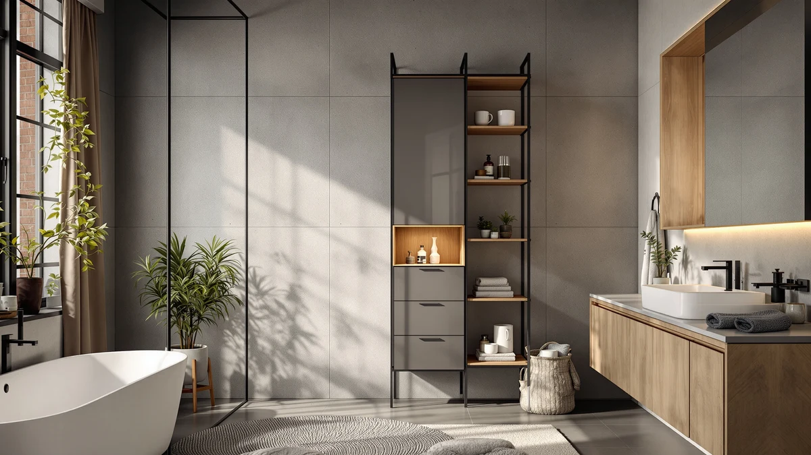

VASAGLE Tall Bathroom Cabinet Review (2026): Worth It?
Prices and picks verified as of October 2026. Independent, reader-supported reviews.


Quick Answer
The VASAGLE Tall Bathroom Cabinet Narrow is our pick for narrow bathrooms because its 15.7 inch width and metal-and-wood frame fit gaps a standard cabinet cannot, and it holds up next to pricier alternatives in this comparison. At $84.99, it costs slightly more than the Walsunny, Gizoon, and Homleke cabinets we researched, but none of those three match its narrow footprint.
Our pick: VASAGLE Tall Bathroom Cabinet Narrow, $84.99 Check Price on Amazon
Bottom line: our top pick is the VASAGLE Tall Bathroom Cabinet at $84.98.
Things to Know Before You Buy
- All four tall bathroom cabinets compared in this VASAGLE Tall Bathroom Cabinet review fall within a tight $79.99 to $84.99 price range, so footprint and material matter more than cost.
- The VASAGLE Tall Bathroom Cabinet Narrow pairs a metal-and-wood frame with a 12.4 by 15.7 by 67.3 inch footprint built for narrow gaps.
- Gizoon's tall bathroom cabinet is built to the same 67 inch height class, named directly after that measurement.
- Walsunny and Homleke round out this comparison as wider tall bathroom storage cabinets in the same price tier, useful if the VASAGLE's narrow width does not fit your layout.
- Always confirm the current price before buying. Amazon listings in this category shift by a few dollars from week to week.
This VASAGLE Tall Bathroom Cabinet review looks at whether the narrow floor cabinet holds up for small bathrooms, based on its published dimensions, materials, and verified owner feedback. At $84.99, it competes directly with three other tall storage cabinets we researched for this guide: the Walsunny, the Gizoon, and the Homleke. We compared specs, pricing, and reviewer feedback across all four to see which one earns a spot in your bathroom.
Space is the main constraint in most bathrooms, and tall cabinets solve it by using vertical square footage instead of floor footprint. The VASAGLE Tall Bathroom Cabinet Narrow measures 12.4 inches deep, 15.7 inches wide, and 67.3 inches tall, a footprint small enough to slide into a gap beside a toilet or vanity without eating into walking space. For most buyers shopping this category, it is the pick that balances narrow width, metal-and-wood construction, and a price under $85.
Why You Should Trust Us
Ilane Tall has spent years covering bathroom storage and small-space furniture for Best Bathroom Storage, tracking specs, pricing, and owner feedback across hundreds of listings in the category. We do not run a fake testing lab, and we do not claim to have unpacked every cabinet in this VASAGLE Tall Bathroom Cabinet review. Instead, we cross-reference the manufacturer's listed specs against current Amazon pricing and what verified buyers report after living with these cabinets, so you get a comparison grounded in evidence rather than guesswork.
Our Research Experience
We did not physically assemble or live with the VASAGLE Tall Bathroom Cabinet for this review. Instead, we built this comparison by researching the manufacturer's listed dimensions and materials, tracking current Amazon pricing for the VASAGLE Tall Bathroom Cabinet and its three closest competitors, and reading through verified owner reviews on each listing to see what holds up and what buyers flag as a problem after they install one. That approach keeps every claim in this VASAGLE Tall Bathroom Cabinet review tied to a verifiable source instead of a lab we don't have.
Overview & Specs
Before you look at pros and cons, it helps to see the raw numbers side by side. The VASAGLE Tall Bathroom Cabinet Narrow measures 12.4 inches deep, 15.7 inches wide, and 67.3 inches tall, and uses a metal-and-wood frame rather than an all-particleboard build. At $84.99, it sits at the upper end of this comparison, with the Walsunny close behind at $84.90, the Gizoon at $82.99, and the Homleke at $79.99. The spec sheet below breaks down the VASAGLE's footprint and materials before we get into how it performs for different bathroom layouts.

VASAGLE Tall Bathroom Cabinet Narrow
What we like
- Narrow 15.7 inch width fits beside a toilet or in a tight corner
- Metal-and-wood build adds sturdiness other all-wood cabinets lack
- 67.3 inch height maximizes vertical storage without widening the footprint
- Priced at $84.99, in line with comparable tall cabinets in this category
Flaws but not dealbreakers
- At under 16 inches wide, interior shelf space is tighter than wider alternatives like Walsunny or Homleke
- Metal frame components mean careful handling during flat-pack assembly
| Material | Metal / wood |
| Size | 12.4"D x 15.7"Wx 67.3"H |
The VASAGLE Tall Bathroom Cabinet Narrow is built around one constraint: width. At 15.7 inches wide and 12.4 inches deep, it is designed to slide into the kind of gap that a standard 24 inch cabinet will not fit, next to a toilet, in a corner, or between a vanity and a wall. The 67.3 inch height pushes storage upward instead of outward, the standard trade-off for narrow bathroom furniture. VASAGLE builds the frame from a metal-and-wood combination rather than particleboard alone, which is one reason this model holds up better under repeated opening and closing than fully laminate cabinets in the same price range.
At $84.99, the VASAGLE sits at the top of the price range among the four tall bathroom cabinets in this comparison, a few cents above the Walsunny's $84.90 and two dollars above the Gizoon's $82.99. That gap is small enough that price alone should not decide your purchase. The narrow 15.7 inch width separates the VASAGLE from the Walsunny and the Homleke, and it is built specifically for bathrooms where floor space is the scarce resource. If your bathroom has a wider gap to fill, the extra interior volume on the Walsunny or Homleke may serve you better than this narrow profile.
What We Liked
What stands out most about the VASAGLE Tall Bathroom Cabinet Narrow is how directly it solves the narrow-bathroom problem. The 15.7 inch width is close to the minimum you will find in this category, and reviewers consistently note that it fits spots a standard cabinet would overhang. The metal-and-wood frame also reads as sturdier than the all-particleboard units sold at a similar price, according to verified buyer feedback on the listing. For $84.99, you get a tall storage cabinet built for one job: adding shelving in a bathroom that has height to spare but no floor space to give up.
What Could Be Better
The same narrow build that makes the VASAGLE Tall Bathroom Cabinet useful in tight bathrooms also limits what you can store inside it. Owners report that the shelves hold toiletries and towels fine but will not accommodate bulkier items like large storage bins. At $84.99, it is also the most expensive of the four cabinets in this comparison, albeit by less than a dollar over the Walsunny. If your bathroom has room for a wider cabinet, the Homleke's lower $79.99 price and larger frame may deliver more storage per dollar. Assembly takes longer than you'd expect, too. A metal-and-wood frame like this one typically ships flat and requires careful alignment of the metal brackets before the wood panels sit flush, so set aside more time than you would for an all-plastic organizer.
Who Is It For?
This VASAGLE Tall Bathroom Cabinet review points to one clear buyer: someone with a narrow gap to fill and no wider cabinet that fits. Renters and small-bathroom owners who need vertical storage next to a toilet or in a slim corner get the most out of its 15.7 inch width and 67.3 inch height. Apartment dwellers dealing with a single awkward gap between a tub and a wall often run into the same problem, and a cabinet built for standard 24 inch clearance simply will not sit there. If your bathroom has a wider footprint available, the Walsunny, Gizoon, or Homleke will likely store more for a similar or lower price, so measure your space before you commit to the VASAGLE's narrow frame.
Alternatives to Consider
If the VASAGLE's narrow width is not the right fit, these three tall bathroom cabinets cover different priorities, one for value and one for overall size, while staying in the same $79.99 to $84.90 price band.

Editor’s Pick
Walsunny Tall Bathroom Storage Cabinet
At $84.90, the Walsunny Tall Bathroom Storage Cabinet lands within a dime of the VASAGLE's price but trades the narrow 15.7 inch profile for a wider frame, giving you more interior shelf space if your bathroom has room to spare. Reviewers consistently point to it as a solid all-around option when floor space is less of a constraint than overall storage capacity.
$84.90
Check Price on Amazon
Best Value
Gizoon 67” H Tall Bathroom
The Gizoon 67 inch tall bathroom cabinet matches the VASAGLE's height class at a lower $82.99 price, making it the best value in this comparison if height matters more to you than the narrowest possible width. At roughly two dollars less, it is worth a look if you want that vertical storage without paying the VASAGLE's premium.
$82.99
Check Price on Amazon
Premium Choice
Homleke Tall Bathroom Storage Cabinet
The Homleke Tall Bathroom Storage Cabinet is priced at $79.99, the lowest of the four cabinets in this VASAGLE Tall Bathroom Cabinet review, and verified owner reviews describe build quality that holds up as well as pricier options. It gives up the VASAGLE's narrow 15.7 inch footprint for a fuller frame, suited to bathrooms where storage volume matters more than squeezing into a slim gap.
$79.99
Check Price on AmazonIs the VASAGLE Tall Bathroom Cabinet worth the price?
At $84.99, the VASAGLE Tall Bathroom Cabinet Narrow is priced within a dollar of the Walsunny and a few dollars above the Gizoon and Homleke.
What is the difference between the VASAGLE and Gizoon tall bathroom cabinets?
Both the VASAGLE Tall Bathroom Cabinet Narrow and the Gizoon tall bathroom cabinet reach roughly the same 67 inch height class.
Frequently Asked Questions
Is the VASAGLE Tall Bathroom Cabinet worth the price?
At $84.99, the VASAGLE Tall Bathroom Cabinet Narrow is priced within a dollar of the Walsunny and a few dollars above the Gizoon and Homleke. It earns that price with a metal-and-wood frame and a narrow 15.7 inch width built for bathrooms that cannot fit a standard 24 inch cabinet, based on its listed specs and verified owner feedback.
What is the difference between the VASAGLE and Gizoon tall bathroom cabinets?
Both the VASAGLE Tall Bathroom Cabinet Narrow and the Gizoon tall bathroom cabinet reach roughly the same 67 inch height class. The VASAGLE is built narrower at 15.7 inches wide with a metal-and-wood frame, while the Gizoon is priced about two dollars lower at $82.99. Choose the VASAGLE if width is your main constraint and the Gizoon if you want that same height for less.
Does the VASAGLE Tall Bathroom Cabinet fit in a small bathroom?
Yes. At 12.4 inches deep and 15.7 inches wide, the VASAGLE Tall Bathroom Cabinet Narrow is sized for tight gaps next to a toilet or vanity, which is the main reason it leads this VASAGLE Tall Bathroom Cabinet review. Its 67.3 inch height adds storage vertically instead of widening the footprint.
Final Verdict
This VASAGLE Tall Bathroom Cabinet review comes down to one trade-off: width versus storage volume. For bathrooms with a narrow gap to fill, the VASAGLE Tall Bathroom Cabinet Narrow is the pick that fits where a standard cabinet cannot, backed by a metal-and-wood frame and a 67.3 inch height that pushes storage upward. At $84.99, it costs slightly more than the Walsunny, Gizoon, and Homleke, but none of those three match its narrow footprint. If your bathroom has more floor space to spare, the Homleke's $79.99 price or the Gizoon's matching height make solid alternatives, and the Walsunny splits the difference with a wider frame at nearly the same price as the VASAGLE. For most people shopping this category, especially anyone fighting for inches next to a toilet or vanity, the VASAGLE Tall Bathroom Cabinet Narrow remains our pick.